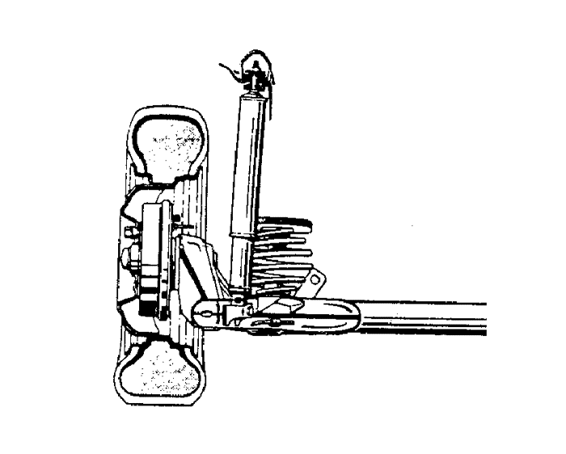
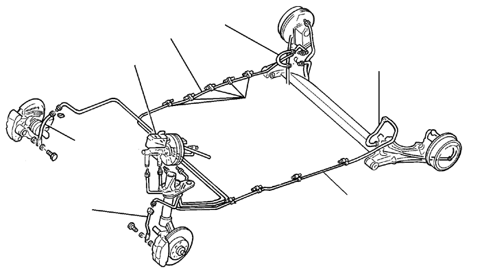
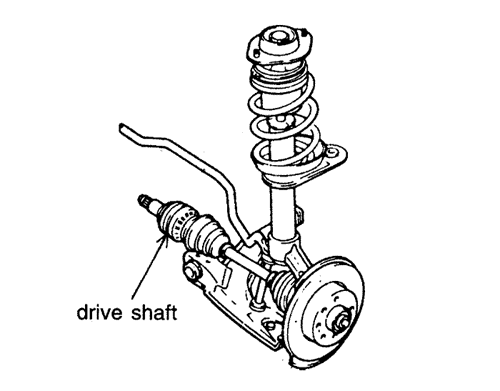
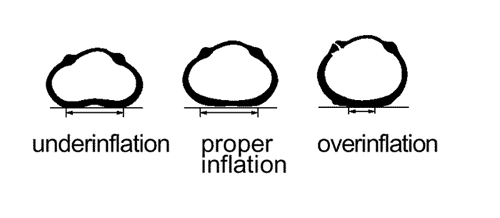

SECCIÓN 4
BAJOS DEL VEHÍCULO
INSPECCIÓN DE BAJOS DEL VEHÍCULO
Suba el vehículo por encima de la cabeza para realizar la inspección de esta sección.
Efectúe una inspección ocular de los bajos de chasis para comprobar si hay componentes sueltos o ausentes, fugas de líquidos y que los conductos estén correctamente trazados y recortados. -Apriete las abrazaderas y acoplamientos
- Estado de los conductos, mangueras y conexiones de freno
- Daños
- Fugas de líquido
- Retorcimiento
- Hinchazón
1. ARTICULACIÓN Y ENGRANAJE DE DIRECCIÓN
Compruebe la articulación y engranaje de dirección.
2. POSICIÓN CORRECTA DE LA ABRAZADERA DEL TIRANTE
Compruebe la abrazadera del tirante.


3. ALINEACIÓN Y SEPARACIÓN ADECUADA DEL SISTEMA DE GASES DE ESCAPE
Compruebe el sistema de escape.

4. SUSPENSIÓN DELANTERA Y TRASERA
Compruebe la suspensión delantera y trasera

Suspensión delantera

Suspensión trasera
5. COMPROBACIÓN DEL NIVEL DE LÍQUIDO DE TRANSMISIÓN MANUAL Y DEL EJE
- - reposte según se requiera

6. SISTEMA DE FRENADO
Compruebe el líquido de frenos, el cilindro de freno, los tubos, las mangueras y el freno de estacionamiento. Compruebe también el ABS, si está equipado con ello.

7. SISTEMA DE COMBUSTIBLE
Compruebe el depósito de combustible, la bomba de combustible, la conexión de mangueras y tubos de combustible, los inyectores de combustible, el calibrador de combustible y el contenedor.


8. ÁRBOL DE TRANSMISIÓN DE LOS EJES MOTRICES DELANTEROS
Compruebe la posible oxidación, daños, combamiento y estado de conjunto del árbol de transmisión.

9. EXAMINE VISUALMENTE EL ESPÁRRAGO DE RUEDA Y LAS TUERCAS DE BRIDA DEL EJE
Saque las cubiertas de ruedas y compruebe el espárrago de rueda y las tuercas de brida.
Par de apriete del espárrago de rueda: 12 kgf•m (120 N·m)

10. INFLE LOS NEUMÁTICOS A LA PRESIÓN ESPECIFICADA
Compruebe la presión de inflado de los neumáticos.
[kPa(psi)]
Tamaño de neumático | Delantero | Trasero |
KALOS | 155/80 R13 | 210(30) | 210(30) |
175/70 R13 | 210(30) | 210(30) |
185/60 R14 | 210(30) | 210(30) |
NUBIRA/LACETTI | 175/70 R14 | 207(30) | 207(30) |
| 185/65 R14 | 207(30) | 207(30) |
195/55 R15 | 207(30) | 207(30) |
TACUMA/REZZO | 185/70 R14 | 220(32) | 220(32) |
195/60 R15 | 220(32) | 220(32) |
195/70 R14 | 210(30) | 210(30) |
EVANDA | 205/65 R15 | 230(33) | 210(30) |
205/55 R16 | 210(30) | 210(30) |
